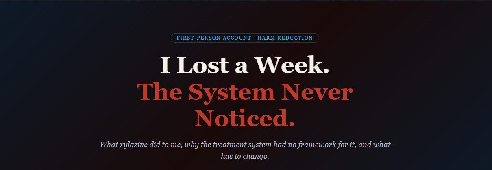

Josh Pearsall
Recovery Roofer
From the streets to the rooftops • Ottawa
Practical guidance on addiction recovery, system navigation in Ottawa, and rebuilding life after incarceration.

What xylazine did to me, why the treatment system had no framework for it, and what has to change.
I want to tell you what happened to me during withdrawal. Not as a cautionary tale. Not as a confession. I want to tell you because I spent time after the fact trying to understand it — pharmacologically, systematically — and when I did, the picture that came together wasn't about personal failure.
It was about a drug supply that changed, a body that responded the way bodies do, and a system that had no framework for any of it.
I lost approximately a week of my life. I woke up in a hospital, handcuffed to a gurney, with no clear memory of how I got there or what had happened in between. People I knew couldn't believe I had survived the circumstances. I had been in a state of psychosis and delirium for days — moving through corrections facilities, escalating, deteriorating — and at no point had anyone identified what was medically happening to me.
This is that story. But it's also an attempt to explain why it happened — what was in the drugs, what those substances do to the nervous system, and what the gap between that reality and the current treatment system looks like on the ground.
📄 A note on the records
I've requested my institutional and medical records through FOIA. When they arrive, I'll publish them separately and link back here. What's written now is from memory, from research, and from the understanding I've built after the fact.
I arrived into custody approximately 24 hours after my last use. I was physically sick — unable to eat, in pain, exhausted. But I was cognitively present. I could answer questions, follow instructions, understand my situation.
By the second day, I became convinced that someone on my range had informed on me to police. This wasn't a vague unease. It was a certainty. The logic felt sound. What I didn't have access to, from inside that state, was any perspective on whether the logic was actually connected to reality.
I understand now what was happening physiologically. The adrenergic rebound was building. Norepinephrine was flooding regions of the brain associated with threat detection. The paranoia in that state isn't a psychological quirk — it's a direct product of a nervous system that has been chemically reconfigured to read everything as threat.
I had one moment of doubt — a flicker of recognition that I might be wrong. I remember it. But I was already in motion, already in circumstances where backing down felt more dangerous than going forward. I lost that thread almost immediately.
The thing about losing capacity is that you don't know you've lost it. From the inside, everything still feels like reasoning. It just isn't.
What followed was a series of escalating situations. I was not in control of what was happening. I was a person in an acute neurological crisis, moving through an environment responding to my behaviour as a conduct problem, with no awareness it was a medical one.
I was considered the aggressor because I went to the bathroom first. As a result, I was moved from minimum to maximum security. I received methadone at one point. A nurse was kind to me, told me to lie down, said I was going to be okay. That was the only clinical intervention I received during that window. It addressed the opioid component of what was happening. It didn't touch the adrenergic crisis.
I woke up in the Ottawa General Hospital. Handcuffed and shackled to a gurney. I didn't know how much time had passed. It had been approximately a week.
Two Systems, Not One
To understand what happened to me, you need to understand that opioids and xylazine affect entirely different systems in the body. This isn't a minor detail — it's the reason standard withdrawal treatment doesn't fully address what people going through the current drug supply are experiencing.
Opioids act on opioid receptors — the pain and reward system. With regular use, the brain adapts: it down-regulates its own natural opioid production. When opioids are removed, the system swings hard the other way. Pain amplifies. The gut goes into crisis. Deep physical misery sets in. This is classic opioid withdrawal. It's brutal, but it's well-understood. Methadone and buprenorphine treat it effectively because they act on the same receptors.
Xylazine operates on a different system entirely: the adrenergic system — specifically α₂-adrenergic receptors. Think of this as the body's stress regulator. It controls heart rate, blood pressure, arousal, fight-or-flight. Xylazine acts as a brake on that system. It suppresses norepinephrine — the neurotransmitter that drives sympathetic activation. The body goes quiet.
When the body is exposed to xylazine repeatedly, it compensates. It upregulates its own norepinephrine production. It's trying to maintain balance. When xylazine is then removed, that compensation doesn't disappear immediately. The brake is gone, but the system has been building pressure behind it. What follows is called adrenergic rebound.
Adrenergic rebound — what it actually looks like: Severe agitation and inability to calm down, heart rate and blood pressure spike, intense anxiety, paranoia and threat hypervigilance, insomnia even when physically exhausted. In severe cases: delirium and psychosis.
These symptoms are not addressed by methadone or buprenorphine. Those act on opioid receptors only. The adrenergic system is untreated.
I arrived into custody approximately 24 hours after my last use. I was physically sick — unable to eat, in pain, exhausted. But I was cognitively present. I could answer questions, follow instructions, understand my situation.
By the second day, I became convinced that someone on my range had informed on me to police. This wasn't a vague unease. It was a certainty. The logic felt sound. What I didn't have access to, from inside that state, was any perspective on whether the logic was actually connected to reality.
I understand now what was happening physiologically. The adrenergic rebound was building. Norepinephrine was flooding regions of the brain associated with threat detection. The paranoia in that state isn't a psychological quirk — it's a direct product of a nervous system that has been chemically reconfigured to read everything as threat.
I had one moment of doubt — a flicker of recognition that I might be wrong. I remember it. But I was already in motion, already in circumstances where backing down felt more dangerous than going forward. I lost that thread almost immediately.
The thing about losing capacity is that you don't know you've lost it. From the inside, everything still feels like reasoning. It just isn't.
What followed was a series of escalating situations. I was not in control of what was happening. I was a person in an acute neurological crisis, moving through an environment responding to my behaviour as a conduct problem, with no awareness it was a medical one.
I received methadone at one point. A nurse was kind to me, told me to lie down, said I was going to be okay. That was the only clinical intervention I received during that window. It addressed the opioid component of what was happening. It didn't touch the adrenergic crisis.
I woke up in the Ottawa General Hospital. Handcuffed and shackled to a gurney. I didn't know how much time had passed. It had been approximately a week.
I was transferred from the hospital back into the institution and taken to admissions and discharge. When they asked which range I wanted to return to, I gave them the name of my previous range. I wasn’t thinking clearly yet. I still wasn’t fully myself.
A guard who knew my history realized immediately that sending me back there would be dangerous. Instead of letting me go, he redirected me to medical segregation. That single decision may have prevented something much worse.
I wasn’t fully myself when I was discharged and returned to the institution. No one assessed that. No one asked. I was returned, and when asked which range I wanted, I said the wrong one. It was only the intervention of a staff member who recognized the danger that prevented something much worse.
A week of my life. A hospital admission. Significant institutional resources. None of it moved me one step closer to treatment. I came out more destabilized than I went in.
I want to be clear: I'm not blaming individual people. The nurse who brought me methadone was genuinely kind. The staff member who spotted the danger when I was returned may have prevented something serious. People were doing their jobs.
The failure was structural. At no point in my movement through those systems was there a framework for identifying what was actually happening: a person in adrenergic rebound from xylazine, layered on top of opioid withdrawal, in a setting with no clinical tools to recognize or respond to either.
What detox means has to be redefined.
Social withdrawal management — a safe place with support but no medical capacity — was built for a different drug supply. It was adequate for heroin-era withdrawal, which is primarily opioid-driven and rarely medically dangerous on its own. It is not adequate for fentanyl-xylazine withdrawal. Adequate detox for the current supply requires physician oversight, monitoring, and the ability to prescribe medications that address the adrenergic system. That is a medical detox. The definition needs to move, and the funding needs to follow it.
The consent and capacity problem needs to be named.
If someone is in delirium, they cannot consent to treatment. If someone is in the grip of adrenergic rebound and paranoia, their cognitive capacity is impaired in ways that are neurologically specific and pharmacologically explainable. The systems around them — corrections, hospital, detox — need frameworks for recognizing this and responding to it medically rather than behaviourally.
Corrections needs clinical literacy on withdrawal.
Jail intake processes are not designed to identify adrenergic rebound. They are designed to process people. A person arriving sick from withdrawal, who is cognitively present on day one and deteriorating by day three, needs a clinical response, not a conduct response. The two things look similar from the outside. They have completely different causes and completely different solutions.
The moment of crisis — however chaotic — should be the entry point to something real. Right now, for most people, it isn't.